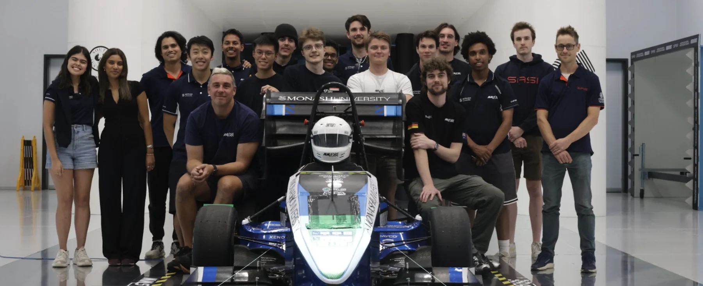
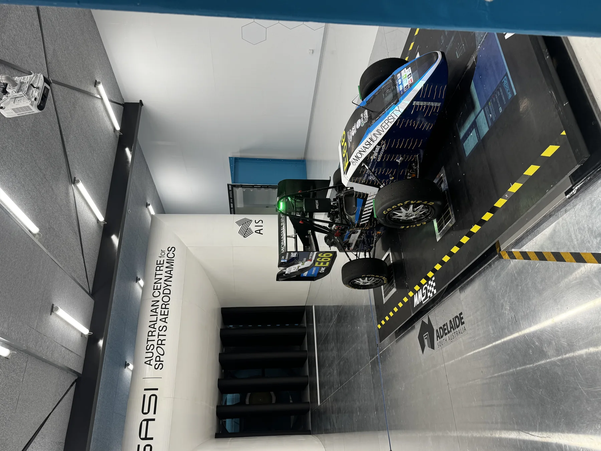
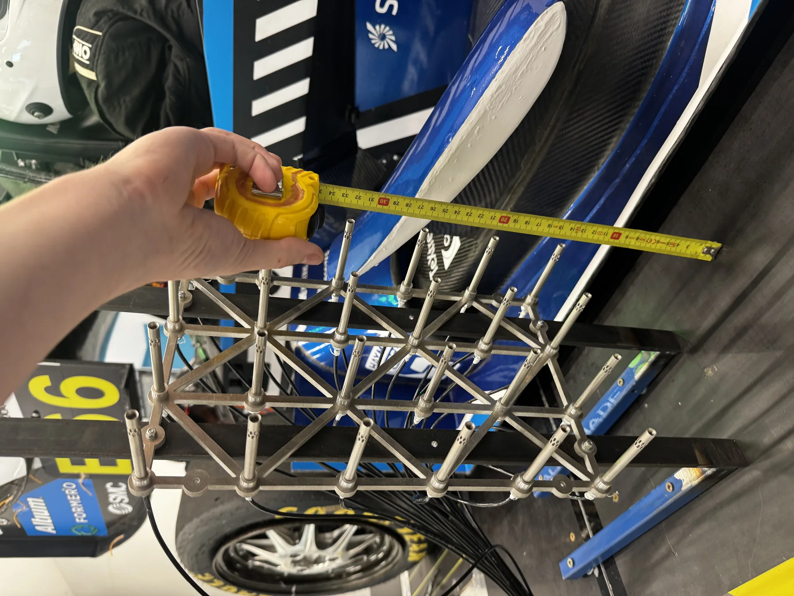
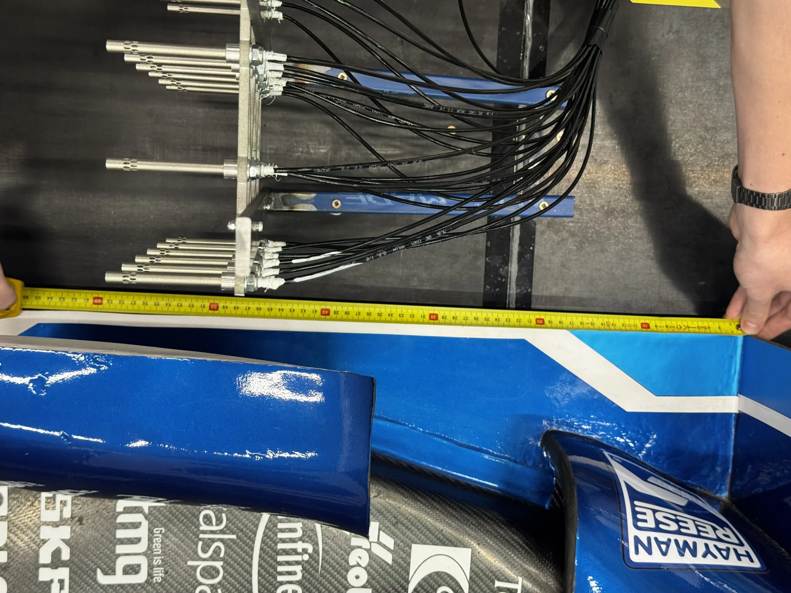
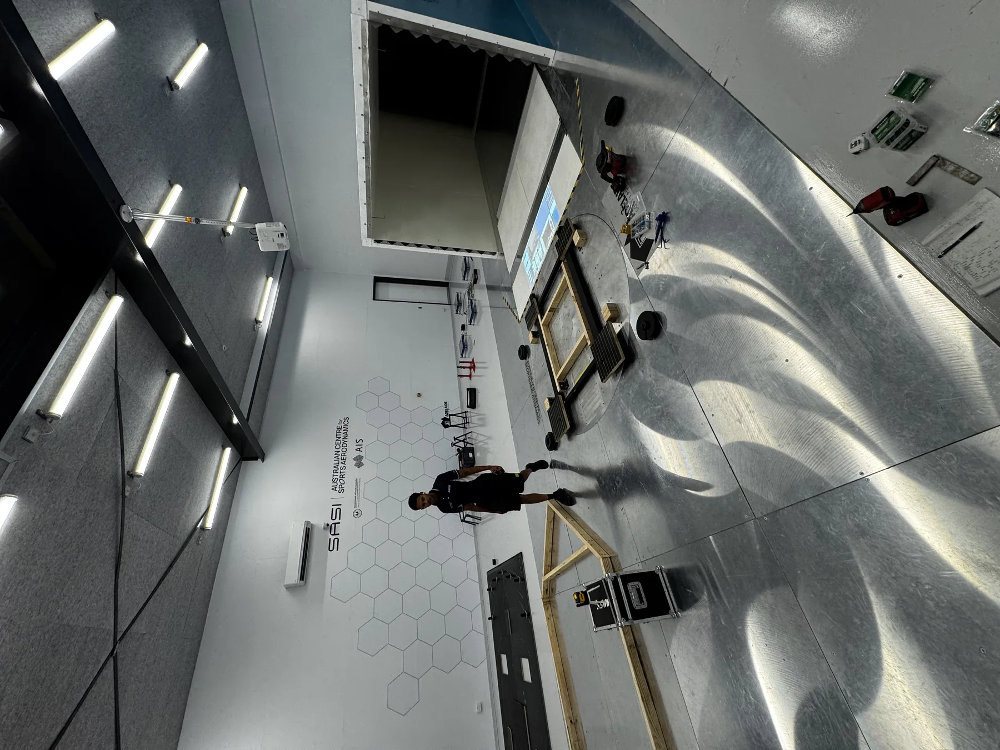
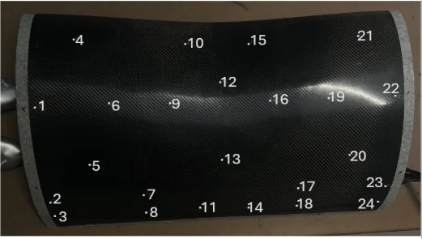
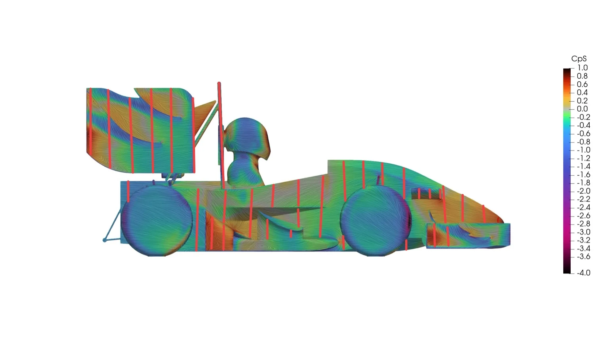
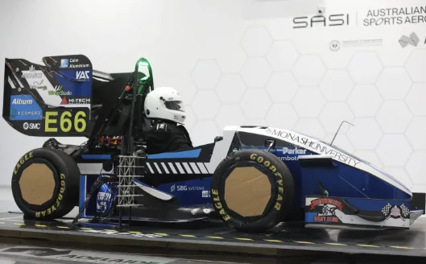

Wind Tunnel Testing
Earlier this year the aerodynamics department attended the Australian Centre for Sports Aerodynamics in Adelaide with our 2024 and 2025 car for a week. The purpose of this testing session was to validate our current CFD and turbulence modelling settings in conjunction with one of our FYP groups and bringing 2 cars to establish geometric independence with the CFD model. Why does a tunnel allow this? Through real life on-track testing similar tests can be conducted within similar attitudes to what is being simulated, with the addition of various uncontrollable variables that can skew results. Examples of these variables being weather, track conditions, and so many more that the use of a wind tunnel eliminates providing a significantly more controlled environment.
Pre-Wind Tunnel Preparation
I helped manufacture a required tapped wing set in particular the front wing, rear wing, & keel step. The overall manufacturing was similar to what I had done previously, identical layup methods; the only difference being drilling holes as required in high interest CpT zones and then hot gluing air flow tubes into said holes to connect to custom Dynamic Pressure Measurement Systems (DPMS) boxes developed by the FYP group, and validated in a smaller wind tunnel available at the university. This was jigged onto the car in preparation for the wind tunnel.

Further I helped develop MATLAB scripts in 2 major areas. The first one focused on looking at ideal locations to place wool tufts, in particular identifying high velocity, swirling and low pressure locations based on post processing data to visually identify and validate hypotheses in the flow structure noted in our then current CFD model. The second script again taking into account various flow structures created an automated transverse probe movement behind the rear wing, movement done by an actuated system available from the wind tunnel. The transverse probe was key in getting values behind the rear wing at various yaw angles and wind speeds.

Testing at the Wind Tunnel
The tests conducted varied, with the first test being a baseline with all aerodynamic devices removed and incrementally added on over various wind tunnel speeds, and yaw angles. Further tests were run with DRS open, closed cockpit tests and with the various tapped devices. A similar test was run with the 2024 car and in conjunction with Adelaide FSAE team AUMT, on the final day due to having extra time and to trade geometry. The tunnel did have blockage which was accounted for via CFD and the ground plane treated using a false floor made to account for any boundary layer generation that may occur and to avoid that. Limitations included no moving ground plane making it hard to measure true rolling road, the load cells within the tunnel limited the tunnel to 12 degrees yaw and a maximum wind speed of 19 m/s, with the tunnel containing a blockage ratio of 28% where it is recommended to have 5%.
Post-Wind Tunnel Analysis
Overall downforce repeatability was within 2% over multiple days which was key providing consistent results to compare with. Within the current CFD model there was 14% increase in CLA compared to wind tunnel data which was consistent over the overall yaw sweeping range; providing a performance positive, however in terms of CFD correlation is something to be analysed more. Between the 2024 and 2025 cars the CDA at 0 degrees yaw was exactly the same which was extremely interesting to note considering the geometry difference between the 2.
The CFD model was over-estimating drag reduction in comparison to wind tunnel data, with the tunnel showing a 33% drag reduction in the 2025 car with all aerodynamic devices and DRS on & off tests, whereas the CFD model noted a 42% decrease.
Overall improvements made to the current CFD model, in particular looking at moving from a closed wheel CFD model to an open wheel CFD model. This was not done previously due to the increase in computational time however with further discussed changes the script was optimised to allow quicker meshing and run time. The turbulence model is to be switched from the long-standing used k-epsilon model to k-omega SST. Further y-plus targets switched from more than 20 to aiming for a y-plus less than 5. Overall lift force accuracy went from a 23% discrepancy to approximately 10%, averaged over the yaw sweep. As the FYP is still running more data is to be collected and understood to further optimise the CFD model but there have been significant improvements as of now.
